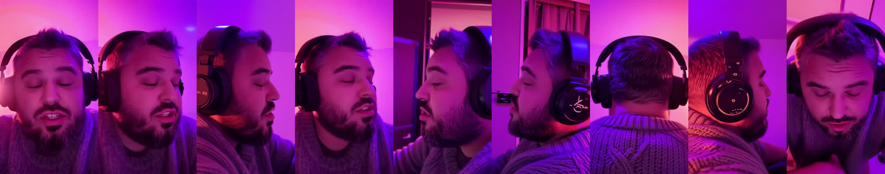
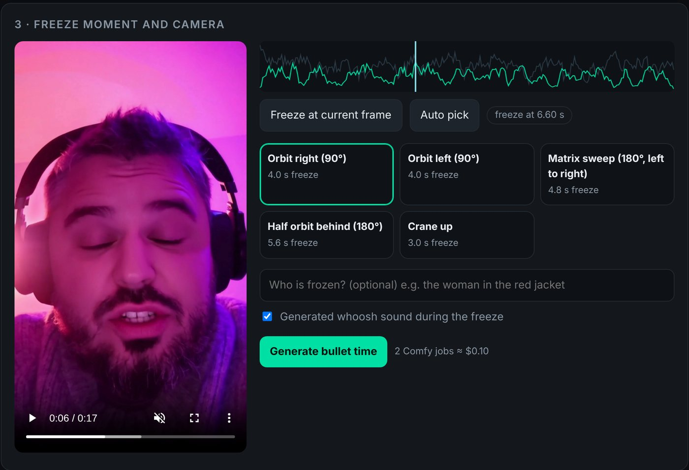

Freeze any moment of your take and fly the camera around it, the way a ring of 100 cameras would. Then the camera lands back on your real frame and the take carries on, with its real sound.
The take is never retimed outside the ramp, so speech before and after the freeze stays in sync with its own audio. Every arc starts and ends on the real frame, so both cuts land on the same image.
OpenCV scores every frame by motion x sharpness, so the freeze lands on the peak without blur. MediaPipe rules out closed eyes: nobody wants to orbit a blink. Scrub to pick your own.
free · CPUQwen-Image-Edit 2511 with the Multiple-Angles LoRA, prompted in its trained <sks> format. Each still is checked; a sideways or upside-down view is rejected.
LTX-2.5 22B: your real frame sits in the latent, every view becomes an LTXVAddGuide keyframe, and the prompt holds time still. Up to 704x1280, audio in the same pass. LTX-2.3 is still one switch away.
ffmpeg ramps into the freeze, plays the orbit, rewinds home and resumes on the very frame it froze on.
free · ffmpegThese are 32 frames of a real orbit-360 render from Comfy Cloud. Qwen saw one frame of a phone selfie and invented the rest of the ring; LTX flew a continuous camera through those views while time stood still.

The keyframes behind it: the real frame, then the 8 Qwen views. The third first came back rotated 90°. The orientation check rejected it and re-rolled just that one view (about $0.025), so the orbit gets all 8. Every orbit frame is also colour-matched to the real frame, so the grade doesn't drift from your take.
Seen from above: you are the dot, the phone was at the bottom. Every move starts and ends on the real frame.
orbit-360real → all the way around → real
6.4 s freezeorbit-rightreal → front quarter → side, 90°
4.0 s freezeorbit-leftreal → front quarter → side, 90°
4.0 s freezesweepreal → right → left → real, 180°
4.8 s freezehalf-rightreal → right → back-right → back
5.6 s freezecranereal → high angle, seen from the side
3.0 s freezeLeft: a finished 24.8 s take, straight out of the app with its real sound. Turn the sound on. Right: the walkthrough, from phone clip to bullet time.
A small local web app runs the whole pipeline. It shows where the motion peaks, lets you scrub to the exact frame, and prices the run before it spends anything.

The Comfy Cloud key lives in your browser and is forwarded per request through your local server. Never written to disk or logged.
Keep the 8 views and re-roll only the orbit (1 job), or change the ramp and slow-mo and re-render for free.
ComfyUI workflows downloads the exact API graphs submitted for your result, ready to open in ComfyUI.
Python 3.10+ and ffmpeg on PATH. No local GPU needed: generation runs on Comfy Cloud with your own key.
> git clone https://github.com/apsolut/bullet-time-comfyui > cd bullet-time-comfyui > python -m venv .venv && .venv\Scripts\activate > pip install -e . > bullettime serve # http://127.0.0.1:8790
$ git clone https://github.com/apsolut/bullet-time-comfyui $ cd bullet-time-comfyui $ python -m venv .venv && . .venv/bin/activate $ pip install -e . $ bullettime serve # http://127.0.0.1:8790
Prefer the command line?
# set COMFY_API_KEY first (never commit it) # free: where would it freeze? $ bullettime analyze take.mp4 # plan + cost, then the real run $ bullettime -P work run take.mp4 --arc sweep --dry-run $ bullettime -P work run take.mp4 --arc sweep --out bt.mp4 # re-roll only the orbit (same views), or re-render for free $ bullettime -P work orbit --arc orbit-left $ bullettime -P work render --ramp 0.8 --slow 4 # the exact graph, for ComfyUI $ bullettime workflow --arc sweep > sweep_api.json
Everything a team needs, still all open weights on Comfy Cloud. See Studio use in the README.
A rejected view (sideways, wrong orientation, closed eyes) is re-rolled on its own in a pruned single-view graph, automatically before every orbit.
~$0.025 per viewThree orbits with different seeds submitted at once. Pick the best one in the web app.
3 x $0.055KJNodes ColorMatch locks the orbit's grade to your real frame. SeedVR2 3B takes it to a 1080 short side, with its audio.
free · ~$0.12ProRes 422 HQ master, H.264 delivery, the freeze loop, every view, timeline.json for your NLE, the cost ledger and the exact graphs that ran.
Docker or Fly.io (Frankfurt config included). No GPU on the host: generation never touches it.
A server-side Comfy Cloud key so nobody pastes one, and an app password on every API call.
Jobs in flight are capped, transient Comfy Cloud errors retry with backoff, and every paid job is booked against your balance.
Everything runs as plain ComfyUI graphs on Comfy Cloud. The graphs live in workflows/ with a bindings file that maps the app's inputs to node ids.
| Step | Model | License |
|---|---|---|
| 8 views | Qwen-Image-Edit-2511 + Multiple-Angles LoRA + Lightning 4-step | Apache-2.0 |
| Orbit + audio | Default: LTX-2.5 22B distilled (int8), Gemma 4 12B text encoder, x2 latent upscaler Also available: LTX-2.3 22B dev fp8, distilled LoRA 0.6, x2 spatial upscaler, Gemma 3 text encoder | LTX-2 Community License, Gemma Terms |
| Moment + splice | OpenCV + ffmpeg, no model | local, free |
orbit-* and sweep stay in front of you.A Higgsfield-style effect, rebuilt as an open ComfyUI app. Sibling of One-Shot Multicam, which turns one selfie into a multicam edit.